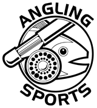

TRAA Links
Conservation
-Carolinian Canada
-Friends of the Thames / Thames River Cleanup
-Nature London
North Shore Steelhead Association-
-Ontario Streams
-Ontario Federation of Anglers and Hunters
-Trout Unlimited Canada
Government Entitles
-Ontario Ministry of Natural Resources
-Ontario Ministry of the Environment
Conservation Authorities
-Ausable Bayfield Conservation Authority
-Credit Valley Conservation Authority
-Essex Region Conservation Authority
-Grand River Conservation Authority
-Halton Region Conservation Authority
-Hamilton Region Conservation Authority
-Long Point Region Conservation Authority
-Lakehead Region Conservation Authority
-Lower Thames Valley Conservation Authority
-Metro Toronto & Region Conservation Authority
-Rideau Valley Conservation Authority
-St.Clair Region Conservation Authority
-Upper Thames River Conservation Authority
Support These Local Fishing and Related Retailers
Related Retailers


John's Fly Materials - 96 Rectory Street, London, ON N5Z 1Z9 (226-270-9029)
Fishing and Related Links
-Ian Colin James
-Western Ontario Fish & Game Protective Association
-Forest City Fly Fishing Club
-Forest City Bassmasters
-Real-Time Hydrometric Data
-Match Angling Club of Ontario
-SOTTO Fly Fishing Club
-Thames River Paddling Routes